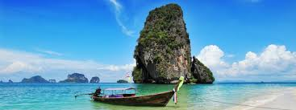
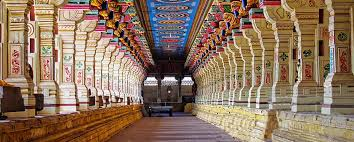
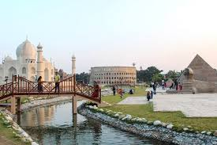

Havelock Island
A calm island memory: clear water, soft sand, and beaches that feel almost unreal. It has that rare travel mood where everything becomes slower and sharper at once.
A travel wall for beaches, islands, hills, temples, palaces, parks, and city coastlines, built with local images and short original notes.
A calm island memory: clear water, soft sand, and beaches that feel almost unreal. It has that rare travel mood where everything becomes slower and sharper at once.

Neil Island felt quieter and more peaceful, with a simple island rhythm. It is the kind of place that makes nature feel close and the day feel unhurried.

The Ramanathaswamy Temple carries a deep spiritual atmosphere. Its long corridors and ancient energy make the visit feel grand, quiet, and unforgettable.
A place with royal character and old-world presence. The Darbhanga Raj legacy gives the area a strong sense of history, culture, and Mithila pride.

Mist, tea gardens, cool air, and mountain views make Darjeeling feel cinematic. It is peaceful but alive, especially when the hills open up on a clear day.

Eco Park feels like a modern green escape inside the city, with open spaces, themed zones, and a relaxed Kolkata weekend atmosphere.

Marina Beach has a huge coastal presence: wide sand, strong sea air, and the feeling of a city meeting the horizon in one long sweep.
These places are more than check-ins. They are visual memories: water, hills, temples, architecture, parks, and coastlines that add scale to life.
Back homeInstagram page for updates, moments, and creative work.
Open Instagram